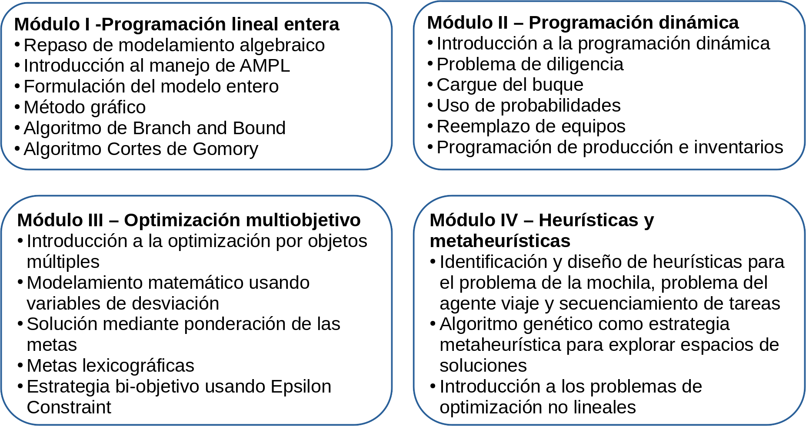
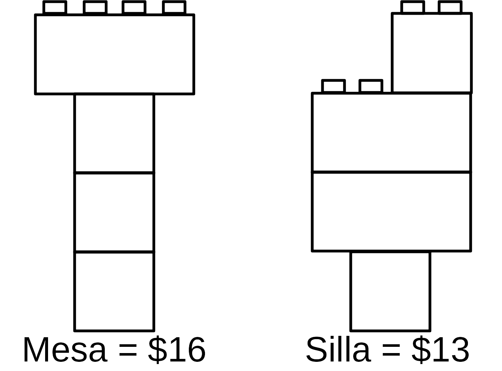
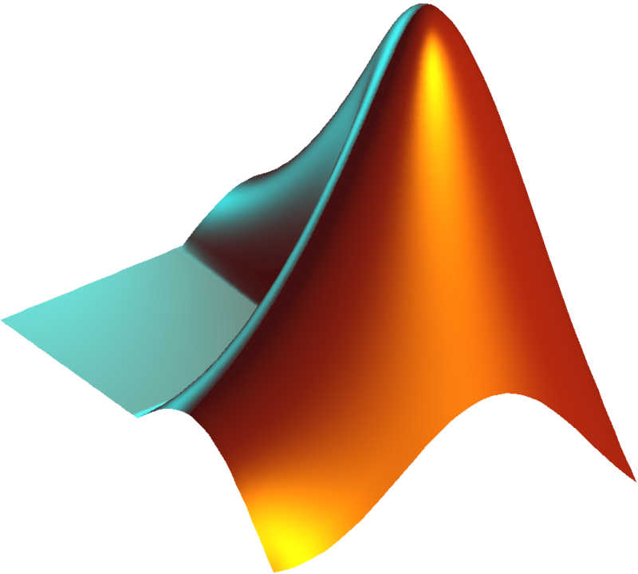

![]()
| Materia prima | Costo $/kg | Azúcares % | Grasas % | Proteínas % | Inertes % |
|---|---|---|---|---|---|
| A | 2.35 | 12 | 10 | 60 | 18 |
| B | 2 | 10 | 10 | 50 | 30 |
| C | 1.7 | 8 | 6 | 44 | 42 |
II8B3 - Investigación de Operaciones II
Introducción
¿Para qué sirve este curso?
- Identificar la importancia del uso de modelos matemáticos de optimización para la solución de problemas de ingeniería.
- Determinar y analizar modelos matemáticos que permitan resolver problemas de ingeniería.
- Implementar estrategias de solución en modelos de gran magnitud.
Contenido
Contenido
Evaluación
Módulo I (30%)
- Evaluación continua (15%)
- Parcial I (15%)
Módulo II (20%)
- Evaluación continua (10%)
- Parcial II (10%)
Módulo III (20%)
- Evaluación continua (10%)
- Parcial III (10%)
Módulo IV (30%)
- Evaluación continua (10%)
- Parcial final (20%)
Recursos guía
- Fourer, R., Gay, D. M., & Kernighan, B. (2003). AMPL A Modeling Language for Mathematical Programming. Second edition.
- Gallego, Escobar (2007). Programación lineal entera. Editorial Universidad Tecnológica de Pereira.
- Hillier, F. S., & Liberman, G. J. (2010). Introduction to Operation Research. Edit. Mc. Graw. Hill. 9th Edition.
- Izar (2018). Investigación de Operaciones. Segunda Edición. Editorial Trillas.
- Muñoz Guevara (2025). Cursos de Producción I, Producción II y Diseño de Plantas.
- Nahmias (2015). Production and Operations Analysis (7th ed.).
- Rendón, R. A. G., Zuluaga, A. E., & Ocampo, E. M. T. (2007). Programación lineal y flujo de redes. Editorial Universidad Tecnológica de Pereira.
Software


Presentación
Repaso de Investigación de Operaciones
 Tomado de GEIO
¿Qué es la investigación de operaciones?
La investigación de operaciones es la rama de las matemáticas que aporta herramientas para la toma de decisiones, específicamente problemas de asignación de recursos escasos. Esto a su vez, buscando la eficiencia y eficacia en el uso de dichos recursos.
Metodología para abordar problemas
Adaptado de Toro Ocampo (2024)
Un ejemplo básico…
Un expendio naturista prepara sus alimentos y los vende al público basándose en tres materias primas, cuyos contenidos se presentan enseguida:
¿Cuánto deberían mezclar de cada una de las tres si se desea minimizar el costo para preparar 1kg de alimento, cuyo contenido de azúcar no sea menor a 10%, su contenido de grasa no mayor a 9.5% y su contenido de proteínas no menor de 52%?
Notación expandida
\(\begin{align*} \text{min } Z(X) &= 2.35X_{A} + 2X_{B} + 1.7X_{C} \\ \\ \text{s.a:} \\ 0.12X_{A} + 0.10X_{B} + 0.08X_{C} &\geq 0.1 ~\text{(Contenido de azúcar)} \\ 0.1X_{A} + 0.1X_{B} + 0.06X_{C} &\leq 0.095 ~\text{(Contenido de grasa)} \\ 0.6X_{A} + 0.5X_{B} + 0.44X_{C} &\geq 0.52 ~\text{(Contenido de proteínas)} \\ X_{A} + X_{B} + X_{C} &= 1 ~\text{(Cantidad requerida)} \\ X_{A}, X_{B}, X_{C} &\geq 0 ~\text{(No negatividad)} \\ \\ \text{Donde:} \\ X_{A} &= \text{Cantidad a usar de la materia prima A} \\ X_{B} &= \text{Cantidad a usar de la materia prima B} \\ X_{C} &= \text{Cantidad a usar de la materia prima C} \end{align*}\)
Notación compacta
\(\begin{align*} \text{min } Z(X) &= \sum_{i \in N} Costo_{i} \ast X_{i} \\ \\ \text{s.a:} \\ \sum_{i \in N}{} Azucar_{i} \ast X_{i} &\geq minimo_{Azucar} ~\text{(Contenido de azúcar)} \\ \sum_{i \in N}{} Grasa_{i} \ast X_{i} &\leq maximo_{Grasa} ~\text{(Contenido de grasa)} \\ \sum_{i \in N}{} Proteinas_{i} \ast X_{i} &\geq minimo_{Proteinas} ~\text{(Contenido de proteínas)} \\ \sum_{i \in N}{} X_{i} &= 1 ~\text{(Cantidad requerida)} \\ X_{i} &\geq 0 ~\text{(No negatividad)} \\ \\ \text{Donde:} \\ X_{i} &= \text{Cantidad a usar de la materia prima i} \\ N &= \{A, B, C\} \end{align*}\)
Software de optimización


 


Software de optimización


Elementos de AMPL
- Conjuntos
- Parámetros
- Variables
- Función objetivo
- Restricciones
- Datos
- Parámetros del solver
Esquema del archivo mod - Notación expandida
Archivo mod - Notación expandida
reset; # Elimina las variables, parametros y soluciones previas
model; # Indica el inicio del modelo
# Variables
var X_A >=0; # Cantidad de la materia prima A
var X_B >=0; # Cantidad de la materia prima B
var X_C >=0; # Cantidad de la materia prima C
# Funcion objetivo
minimize Z: 2.35*X_A + 2*X_B + 1.7*X_C;
# Restricciones
s.t. Contenido_Azucar:
0.12*X_A + 0.1*X_B + 0.08*X_C >= 0.1;
s.t. Contenido_Grasa:
0.1*X_A + 0.1*X_B + 0.06*X_C <= 0.095;
s.t. Contenido_Proteinas:
0.6*X_A + 0.5*X_B + 0.44*X_C >= 0.52;
s.t. Cantidad_Requerida:
X_A + X_B + X_C = 1;
# Opciones del solver
option solver highs;
solve;
display Z, X_A, X_B, X_C;Esquema del archivo mod - Notación compacta
Archivo mod - Notación compacta
reset; # Elimina las variables, parametros y soluciones previas
model; # Indica el inicio del modelo
# Conjuntos
set N; # Conjunto de materias primas
# Parametros
param Costo{N} >=0; # Costo de cada materia prima
param Azucar{N} >=0; # Aporte de azucar de cada mp
param minimo_azucar >=0;
param Grasa{N} >=0; # Aporte de grasa de cada mp
param maximo_grasa >=0;
param Proteinas{N} >=0; # Aporte de proteinas de cada mp
param minimo_proteinas >=0;
# Variables
var X{N} >=0; # Cantidad a usar de cada materia prima
# Funcion objetivo
maximize Z:
sum{i in N} Costo[i]*X[i];
# Restricciones
s.t. Contenido_Azucar:
sum{i in N} Azucar[i]*X[i] >= minimo_azucar;
s.t. Contenido_Grasa:
sum{i in N} Grasa[i]*X[i] <= maximo_grasa;
s.t. Contenido_Proteinas:
sum{i in N} Proteinas[i]*X[i] >= minimo_proteinas;
s.t. Cantidad_Requerida:
sum{i in N} X[i] = 1;
# Datos
data AMPL_ejemplo1.dat; # Indica de dónde extraer los datos
# Opciones del solver
option solver highs;
expand; # Expande el modelo, sirve para validar
solve;
display Z, X;Archivo dat - Notación compacta
Archivo dat (Alternativa) - Notación compacta
Solución
Notación expandida
Notación compacta 
Un ejemplo un poco más complejo…
En preparación para la temporada invernal, una compañía fabricante de ropa está manufacturando abrigos de piel con capucha y chamarras con relleno de plumas de ganso, pantalones con aislamiento y guantes. Todos los productos se elaboran en cuatro departamentos diferentes: corte, aislamiento, costura y empaque.
La compañía recibió pedidos en firme de sus productos, el contrato estipula una penalización por los artículos no surtidos. Elabore un plan de producción óptimo para la compañía, con base en los siguientes datos:
Tiempo requerido por área (hr)
|
|||||
|---|---|---|---|---|---|
| Departamento | Abrigos | Chamarras | Pantalones | Guantes | Capacidad (hr) |
| Corte | 0.3 | 0.3 | 0.25 | 0.15 | 1000 |
| Aislamiento | 0.25 | 0.35 | 0.3 | 0.1 | 500 |
| Costura | 0.45 | 0.5 | 0.4 | 0.22 | 302 |
| Empaque | 0.15 | 0.15 | 0.1 | 0.05 | 700 |
| Demanda | 800 | 750 | 600 | 500 | - |
| Utilidad ($/uni) | 30 | 40 | 20 | 10 | - |
| Penalización por unidad ($/uni) | 15 | 20 | 10 | 8 | - |
¿Cuántas unidades se deben producir de cada producto para maximizar la utilidad?
Notación expandida
\(\begin{align*} \text{max } Z(X) &= 30X_{1} + 40X_{2} + 20X_{3} + 10X_{4} \\ &\text{...} - 15\max\{800-X_{1},0\} \\ &\text{...} - 20\max\{750-X_{2},0\} \\ &\text{...} - 10\max\{600-X_{3},0\} \\ &\text{...} - 8\max\{500-X_{4},0\} \\ \text{s.a:} \\ 0.3X_{1} + 0.3X_{2} + 0.25X_{3} + 0.15X_{4} &\leq 1000 ~\text{(Corte)} \\ 0.25X_{1} + 0.35X_{2} + 0.3X_{3} + 0.1X_{4} &\leq 500 ~\text{(Aislamiento)} \\ 0.45X_{1} + 0.5X_{2} + 0.4X_{3} + 0.22X_{4} &\leq 302 ~\text{(Costura)} \\ 0.15X_{1} + 0.15X_{2} + 0.1X_{3} + 0.05X_{4} &\leq 700 ~\text{(Empaque)} \\ X_{1} &\leq 800 ~\text{(Demanda de abrigos)} \\ X_{2} &\leq 750 ~\text{(Demanda de chamarras)} \\ X_{3} &\leq 600 ~\text{(Demanda de pantalones)} \\ X_{4} &\leq 500 ~\text{(Demanda de guantes)} \\ X_{1}, X_{2}, X_{3}, X_{4} &\geq 0 ~\text{(No negatividad)} \\ \\ \text{Donde:} \\ X_{1} &= \text{Cantidad a fabricar de abrigos} \\ X_{2} &= \text{Cantidad a fabricar de chamarras} \\ X_{3} &= \text{Cantidad a fabricar de pantalones} \\ X_{4} &= \text{Cantidad a fabricar de guantes} \end{align*}\)
Notación compacta
\(\begin{align*} \text{max } Z(X) &= \sum_{i = 1}^{M} (Utilidad_{i} \ast X_{i} \\ &\text{...} - Penalidad_{i} \ast \max\{Demanda_{i}-X_{i},0\}) \\ \text{s.a:} \\ \sum_{i = 1}^{M} Corte_{i} \ast X_{i} &\leq TiempoDisponible_{Corte} ~\text{(Corte)} \\ \sum_{i = 1}^{M} Aislamiento_{i} \ast X_{i} &\leq TiempoDisponible_{Aislamiento} ~\text{(Aislamiento)} \\ \sum_{i = 1}^{M} Costura_{i} \ast X_{i} &\leq TiempoDisponible_{Costura} ~\text{(Costura)} \\ \sum_{i = 1}^{M} Empaque_{i} \ast X_{i} &\leq TiempoDisponible_{Empaque} ~\text{(Empaque)} \\ X_{i} &\leq Demanda_{i} ~\forall ~i \in M ~\text{(Demanda de i)} \\ X_{i} &\geq 0 ~\forall ~i \in M ~\text{(No negatividad)} \\ \\ \text{Donde:} \\ X_{i} &= \text{Cantidad a fabricar del producto i} \\ M &= \text{Conjunto de productos} \end{align*}\)
Notación compacta
\(\begin{align*} \text{max } Z(X) &= \sum_{i = 1}^{M} (Utilidad_{i} \ast X_{i} \\ &\text{...} - Penalidad_{i} \ast \max\{Demanda_{i}-X_{i},0\}) \\ \text{s.a:} \\ \sum_{i = 1}^{M} Tiempo_{i,j} \ast X_{i} &\leq TiempoDisponible_{j} ~\forall ~j \in \text{Area} \\ X_{i} &\leq Demanda_{i} ~\forall ~i \in Productos \\ X_{i} &\geq 0 ~\forall ~i \in Productos \\ \\ \text{Donde:} \\ X_{i} &= \text{Cantidad a fabricar del producto i} \\ M &= \text{Cantidad de productos} \end{align*}\)
Archivo mod - Notación compacta
reset; # Elimina las variables, parametros y soluciones previas
model; # Indica el inicio del modelo
# Conjuntos
param M integer >=0; # Cantidad de productos
set Productos:= 1..M; # Conjunto de productos
set Areas; # Conjuntos de areas de produccion
# Parametros
param Utilidad{Productos} >=0; # Utilidad unitaria por producto
param Penalidad{Productos} >=0; # Penalidad unitaria por demanda no cubierta
param Demanda{Productos} >=0; # Demanda por tipo de producto
param TiempoRequerido{Productos, Areas} >=0; # Tiempo requerido por el producto i en el area j
param TiempoDisponible{Areas} >=0; # Tiempo disponible
# Variables
var X{Productos} integer >=0; # Cantidad a fabricar del producto i
# Funcion objetivo
maximize Z:
sum{i in Productos} (Utilidad[i]*X[i] - Penalidad[i]*max(Demanda[i]-X[i], 0));
# Restricciones
s.t. Tiempo{(i,j) in {Productos,Areas}}:
TiempoRequerido[i,j]*X[i] <= TiempoDisponible[j]
;
s.t. Demandas{i in Productos}:
X[i] <= Demanda[i]
;
# Datos
data 0_AMPL_Ejemplo2Compacto.dat; # Indica de donde extraer los datos
# Opciones del solver
option solver highs;
expand;
solve;
display Z, X;Archivo dat - Notación compacta
param M:= 4; # Cantidad de productos
set Areas:= Corte Aislamiento Costura Empaque;
param:
Utilidad Penalidad Demanda:=
1 30 15 800
2 40 20 750
3 20 10 600
4 10 8 500
;
param TiempoRequerido:=
1 Corte 0.3
1 Aislamiento 0.25
1 Costura 0.45
1 Empaque 0.15
2 Corte 0.3
2 Aislamiento 0.35
2 Costura 0.5
2 Empaque 0.15
3 Corte 0.25
3 Aislamiento 0.3
3 Costura 0.4
3 Empaque 0.1
4 Corte 0.15
4 Aislamiento 0.1
4 Costura 0.22
4 Empaque 0.05
;
param TiempoDisponible:=
Corte 1000
Aislamiento 500
Costura 302
Empaque 700
;
Archivo dat (Alternativa) - Notación compacta
param M:= 4; # Cantidad de productos
set Areas:= Corte Aislamiento Costura Empaque;
param:
Utilidad Penalidad Demanda:=
1 30 15 800
2 40 20 750
3 20 10 600
4 10 8 500
;
param TiempoRequerido:
Corte Aislamiento Costura Empaque:=
1 0.3 0.25 0.45 0.15
2 0.3 0.35 0.5 0.15
3 0.25 0.3 0.4 0.1
4 0.15 0.1 0.22 0.05
;
param TiempoDisponible:=
Corte 1000
Aislamiento 500
Costura 302
Empaque 700
;
Solución
Módulo I - Producción
- Generalidades
- Sistemas de producción
- Planeación de la capacidad de producción
- Programación CPM, PERT y LPU

Investigación de Operaciones II | Facultad de Ciencias Empresariales